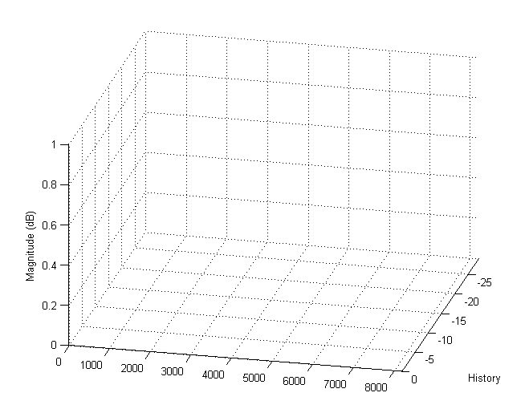
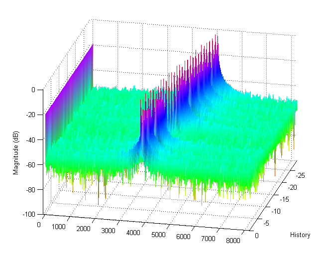

SPECGRAMSCOPE makes it fairly easy to include a spectrogram scope in your real-time data acquisition and analysis application. You feed spectrumscope your data, and it plots the FFT - simple enough! It takes 2 steps to use SPECGRAMSCOPE. First, you initialize the scope with basic information needed for the FFT (sample rate, fft length, and history length). After that, all you need to do is pass your data to the scope.
This documentation starts with the simplest syntax for the two steps, then provides a few more advanced options.
SPECGRAMSCOPE(FS,NFFT) initializes a spectrogram scope in the current axes. This spectrogram scope will compute and displays the NFFT-point FFT of a vector signal with sample rate FS Hz. It will show the last 10 FFTs
SPECGRAMSCOPE(S) updates the spectrogram scope in the current axes with the FFT of vector S. The scope should first be initialized as above with sample rate and FFT length. If not, the sample rate will be 1 Hz and the FFT length will be the length of S. Differences between the length of S and the specified FFT length are handled the same as MATLAB's built-in FFT function (i.e., zero-padding or truncation, as appropriate).
SPECGRAMSCOPE(HAX, ...) defines the scope in specified axes HAX instead of GCA. i.e., SPECGRAMSCOPE(HAX,FS,NFFT) initializes axes HAX as a spectrogram scope, and SPECGRAMSCOPE(HAX,S) updates axes HAX with vector S.
HAX = SPECGRAMSCOPE(...) returns a handle to the axes initialized by the spectrogram scope. This is useful if you allow SPECGRAMSCOPE to create an axes for you, and want to be able to easily reference the axes for updates. The surface created by SPECGRAMSCOPE all have the tag 'SpecgramScope'. If you would like to manually modify the properties of these lines, their handles can be found by:
HAX = SPECGRAMSCOPE(...);
HSurf = findobj(HAX,'Tag','SpecgramScope');Fs = 16384;
Nfft = 2048;
t = (0:1:Nfft-1)'/Fs;
fo = logspace(3.5,3.7); % Range of fundamental frequencies
s1 = sin(2*pi*t*fo) + .1*rand(Nfft,length(fo));
specgramscope(Fs,Nfft,30); view([103 30])
for ii = 1:length(fo) specgramscope(s1(:,ii)); drawnow;pause(.01); end;